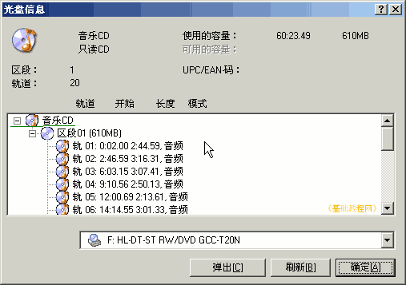
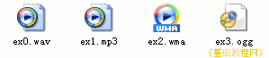
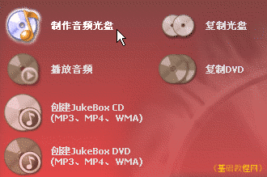
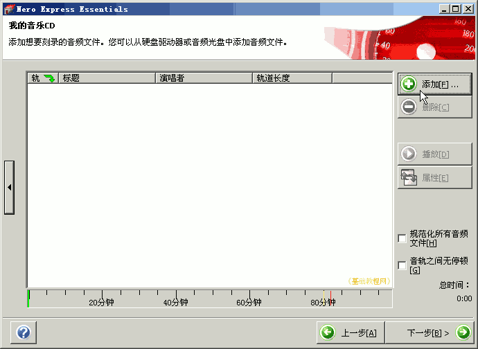
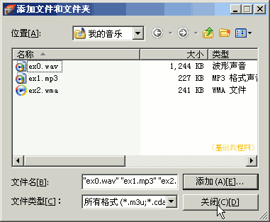
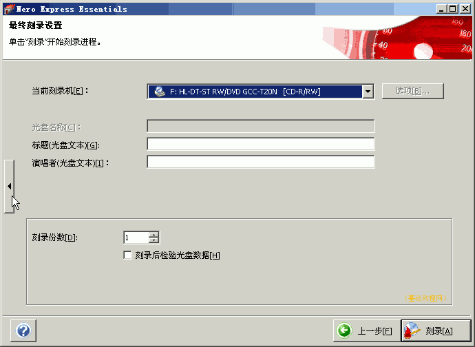
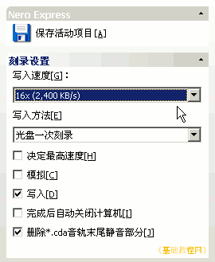
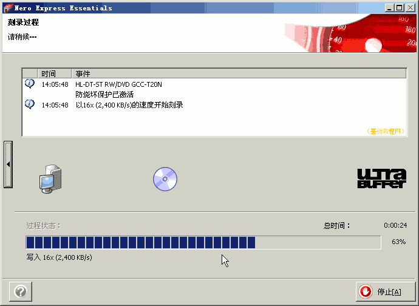
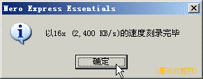

光盘刻录基础教程
作者：TeliuTe 来源：基础教程网
音乐CD既可以在电脑上播放，也可以在CD机上播放，我们可以把电脑中的音乐文件，刻录成音乐CD光盘，下面我们来看一个练习；
1、准备音乐文件
1）音乐CD的格式比较特殊，它存放数据是按照轨道的方式，每首音乐占一个音轨，两首之间有一小段间隙；

2）电脑中的音乐文件，刻录到CD前要先进行转换，转换成CD音质，一般自动转换成wav格式；

2、刻录音乐CD
1）启动 Nero，双击桌面上的“Nero StartSmart Essentials”图标，然后点音乐图标，再选“制作音频光盘”；

2）在出来的添加文件面板中，点右边的“添加”按钮，出来一个浏览对话框；

3）可以添加文件夹，也可以添加文件，完成以后点浏览对话框右下角的“关闭”按钮，回到添加面板点“下一步”继续；

4）在接下来的刻录设置选项面板里，选择刻录机、输入光盘标题、演唱者，然后点左边的侧栏按钮；

刻录机里的Image Recorder，是制作映像文件，选择此项会提示映像文件名和位置；
5）在左侧栏的选项里，选择一个合适的刻录速度，检查无误后，点右下角的“刻录”按钮，开始刻录；

6）刻录时间长短，取决于刻录速度和文件内容大小，耐心等待刻录完成；

7）刻录完成后，自动弹出光盘，取出光盘关好托盘，这样就制作好了一张数据光盘；

本节学习了用 Nero 制作音乐CD光盘的基本方法，如果你成功地完成了练习，请继续学习下一课内容；
本教程由86团学校TeliuTe制作|著作权所有
基础教程网：http://teliute.org/
美丽的校园……
转载和引用本站内容，请保留作者和本站链接。